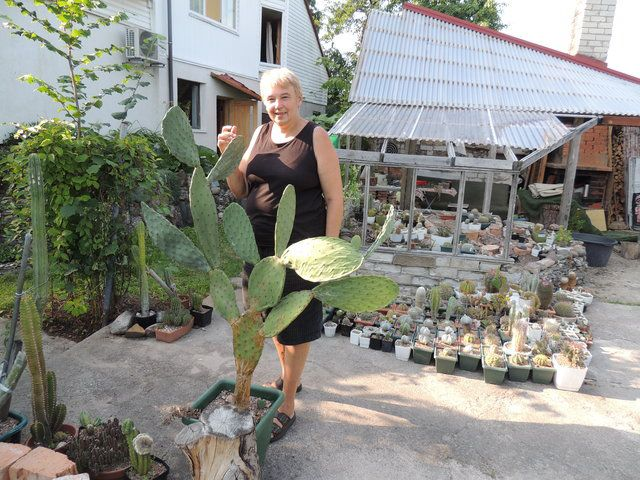
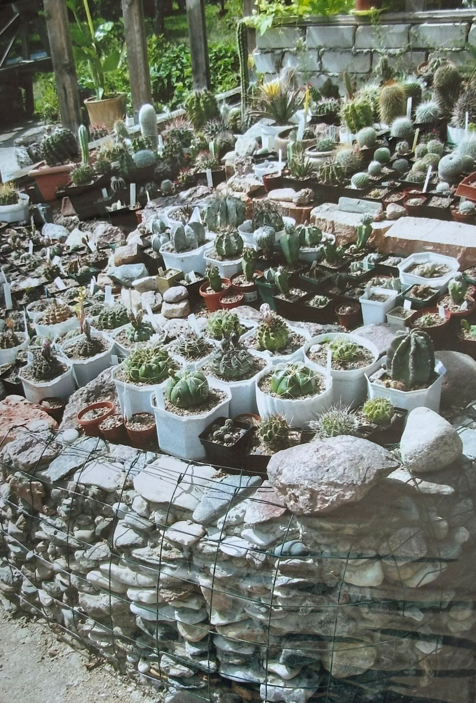
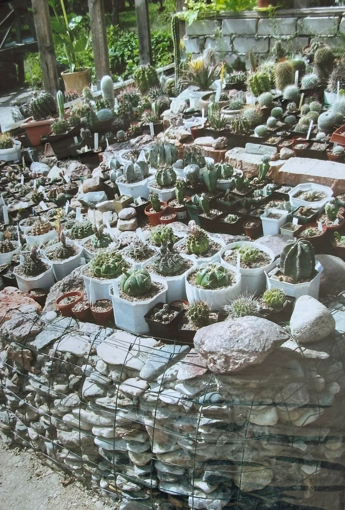
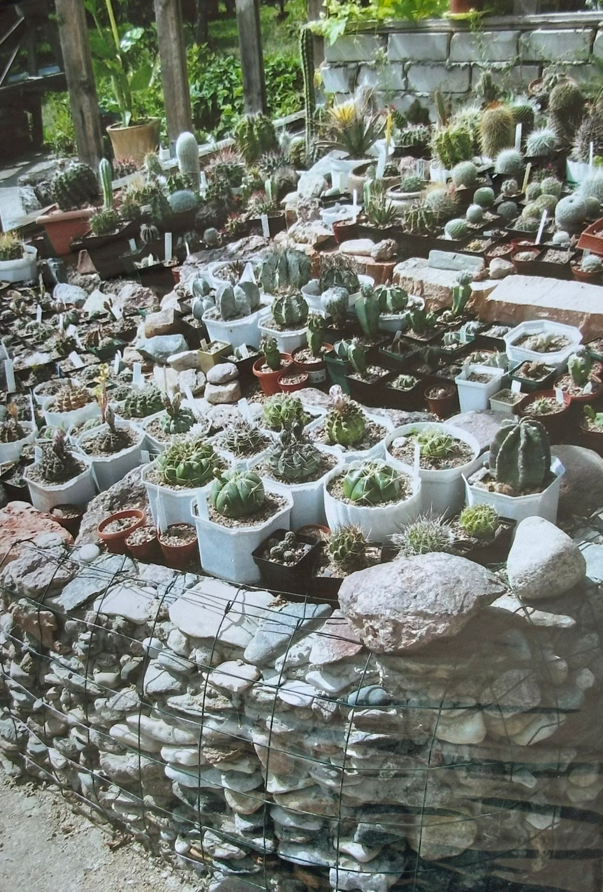
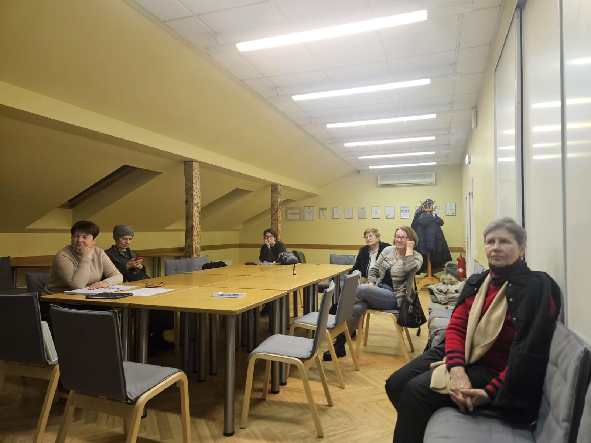
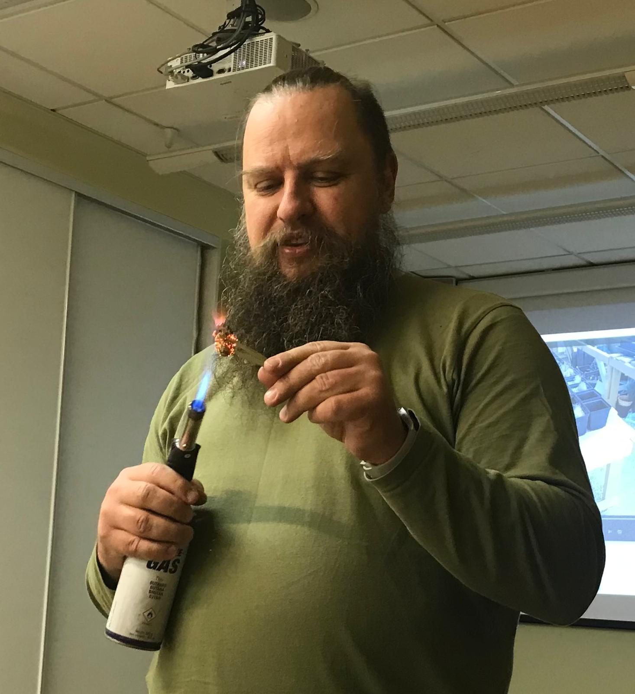
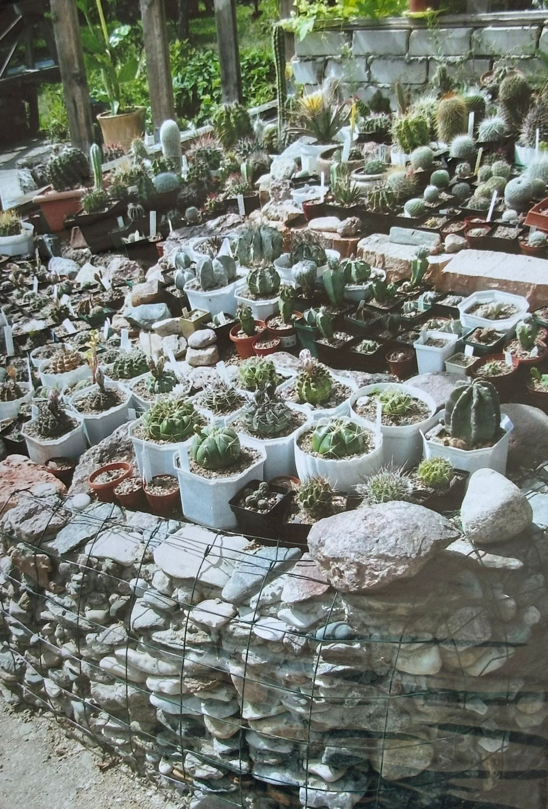

🖼️ Foto no privātajām kolekcijām (Lija Ivaska) / Photos from private collections (Lija Ivaska)

 


Latvijas Kaktusu un citu sukulentu biedrība vieno Latvijas kaktusu un sukulentu entuziastus. Biedrība organizē tikšanās, lekcijas un dārza izstādes, kurās dalībnieki var apmainīties ar pieredzi, stādiem un padomiem par šo aizraujošo augu audzēšanu un kolekcionēšanu. Pievienojies mums, lai kopīgi iepazītu un izjustu sukulentu daudzveidīgo un neparasto skaistumu!
The Latvian Cactus and Other Succulents Society brings together enthusiasts of cacti and succulents from across Latvia. The society organizes meetings, lectures, and plant exhibitions where members can share their experience, plants, and advice on growing and collecting these fascinating plants. Join us to explore and appreciate the diverse and unique beauty of succulents together!
1965. gada martā nelielā Zinātņu akadēmijas ziedu veikaliņā pirmo reizi pulcējās eksotisko augu cienītāji. Drīz vien grupu vadīja Z. Gaile, bet lekcijas interesentiem lasīja Gaisma Krastiņa un Jānis Šķipsna.
Toreiz literatūras par sukulentu audzēšanu bija ļoti maz, tāpēc entuziasti paši tulkoja rakstus un grāmatas no vācu, čehu un citām valodām. Pateicoties viņu darbam un aizrautībai, visā Latvijā tika izveidotas daudzas privātkolekcijas. Notika izstādes muzejos, skolās, teātros un kolhozos, tika izveidotas ekspozīcijas botāniskajos dārzos. Arī dārzkopības saimniecībās sāka audzēt sukulentus un ražot to sēklas pārdošanai. Šodien šo pirmo entuziastu tradīcijas turpina dzīvot tālāk.
Mūsdienu kolekcionāri, pētnieki un vienkārši augu mīļotāji ar tādu pašu sirsnību un rūpību turpina kopt retus augus, dalīties pieredzē, paplašināt kolekcijas un atbalstīt šīs kustības attīstību Latvijā. Pateicoties šiem cilvēkiem, kaktusu un citu sukulentu audzēšanas kultūra mūsu valstī ne tikai saglabājas, bet arī turpina uzplaukt.
The widespread interest in cacti in Latvia began in the 1960s. In March 1965, a small flower shop at the Academy of Sciences hosted the first gathering of enthusiasts of these exotic plants. The group was later led by Z. Gaile, while the first lectures for members were delivered by Gaisma Krastiņa and Jānis Šķipsna.
At that time, literature on succulent cultivation was scarce, so enthusiasts translated articles and books themselves from German, Czech, and other languages. Thanks to their dedication and passion, numerous private collections were created throughout Latvia. Exhibitions were held in museums, schools, theatres, and collective farms, and special displays were established in botanical gardens. Horticultural farms also began growing succulents and producing seeds for sale.
Today, the traditions of those early enthusiasts continue to thrive. Modern collectors, researchers, and plant lovers carry on this work with the same devotion and care — cultivating rare species, sharing knowledge, expanding collections, and supporting the growth of this movement across Latvia. It is thanks to these people that the culture of growing cacti and succulents in Latvia not only endures but continues to flourish.
Email: kaktusudraugi@inbox.lv
Telefons/Phone: +371 26322652
Email: olga.popova.oft@gmail.com
Telefons/Phone: +371 29250486
Website: https://kaktuss.space


Saņēmējs: Latvijas Kaktusu un citu sukulentu biedrība
Reģ. Nr.: 40008174954
Banka: Swedbank AS
IBAN: LV59HABA0551030467722
SWIFT: HABALV22XXX

Nākamā biedrības sēde notiks 13. martā plkst.18.00 Latvijas Nacionālajā Dabas muzejā. Adr.:Krišjāņa Barona iela 4, Centra rajons, Rīga, LV-1050, 6. stāvā.
Lekcijas tēma 1.: Ziemcietīgi kaktusi atklātā gruntī Latvijā.
Lekcijas tēma 2.: Stādu potēšana.
Lektors: Lija Ivaska.
The next association meeting will take place on March 13 at 18:00 at the Latvian National Museum of Natural History. Add.:Krišjāņa Barona iela 4, Centra rajons, Rīga, LV-1050, 6. stāvā.
Lecture topic 1.: Winter-hardy cacti in open ground in Latvia.
Lecture topic 2.: Seedling grafting.
Lecture: Lija Ivaska.
👉 Neskatoties uz puteni un stipro salu, februāra tikšanās tomēr notika un norisinājās patiesi draudzīgā atmosfērā. Sirsnīgi pateicamies Kārlim par izcilo lekciju par opuncijām. Materiāls bija rūpīgi sagatavots, strukturēts un pasniegts aizraujoši un saprotami. Īpašu interesi izraisīja praktiskā daļa, kur Kārlis demonstrēja savu aizsardzības metodi pret glohīdijām — sīkajiem, bet viltīgajiem ērkšķiem. Viņa pieredze un ieteikumi noteikti būs noderīgi mums visiem.
👉 Despite the snowstorm and freezing temperatures, the February meeting successfully took place and was held in a warm and truly friendly atmosphere. We sincerely thank Kārlis for his excellent lecture on opuntias. The material was carefully prepared, well-structured, and presented in an engaging and accessible way. Particular interest was drawn to the practical part of the lecture, where Kārlis demonstrated his own method of protection against glochids — the tiny yet troublesome spines. His experience and advice will undoubtedly be valuable to all of us.
 🌵 Interesants fakts / Interesting fact:
Saguaro — milzu kaktuss no Sonoras tuksnesis un Arizona. Tas var sakarst līdz gandrīz 60 °C, bet ūdens krājumi iekšpusē pasargā to no pārkaršanas. Dzīvo līdz 200 gadiem un var izaugt līdz 15 metriem.
Saguaro is a giant cactus from the Sonoran Desert and Arizona. It can heat up to nearly 60 °C, but the water stored inside protects it from overheating. It can live up to 200 years and grow as tall as 15 meters.
🌵 Mūsu kolekcijas / Our collections:
Taču mums, Latvija ar četriem gadalaikiem, ir īpaši interesanti zināt, kā kaktusi aug citos temperatūras režīmos. Izrādās, ka pastāv salcietīgas sugas, piemēram, Opuncija, kas spēj izturēt temperatūru līdz −20 °C un pat zemāku. Arī Latvijā ir kaktusu audzētāji, kuri veiksmīgi audzē kaktusus dārzā zem klajas debess — ja nodrošina labu augsnes drenāžu un aizsardzību no liekā mitruma ziemā, augi spēj pārziemot un vasarā ziedēt.
However, for us, Latvia with its four seasons, it is particularly interesting to know how cacti grow in other temperature regimes. It turns out that there are frost-resistant species, such as Opuntia, which can withstand temperatures down to −20 °C and even lower. In Latvia, there are also cactus growers who successfully cultivate cacti in outdoor gardens — with good soil drainage and protection from excess moisture in winter, the plants can survive the winter and bloom in summer.
